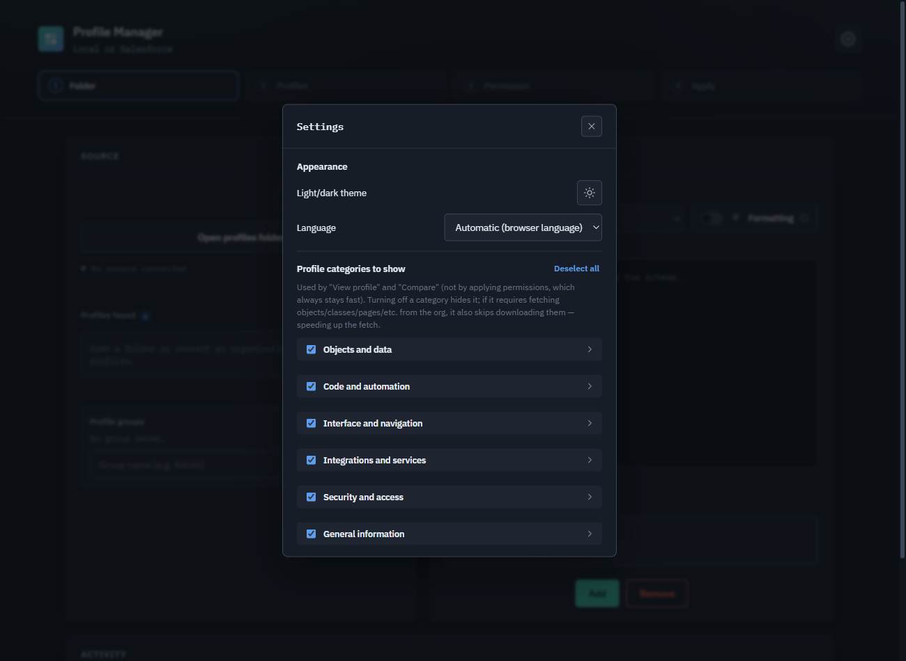
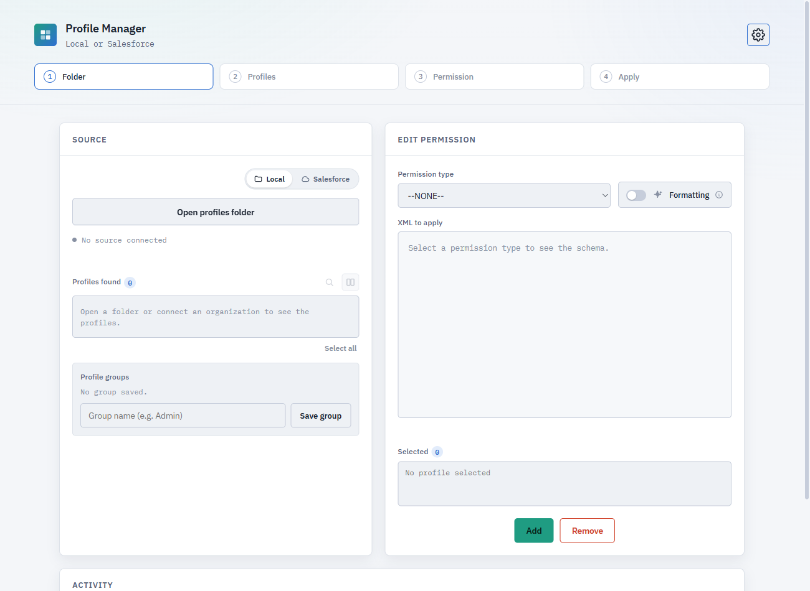
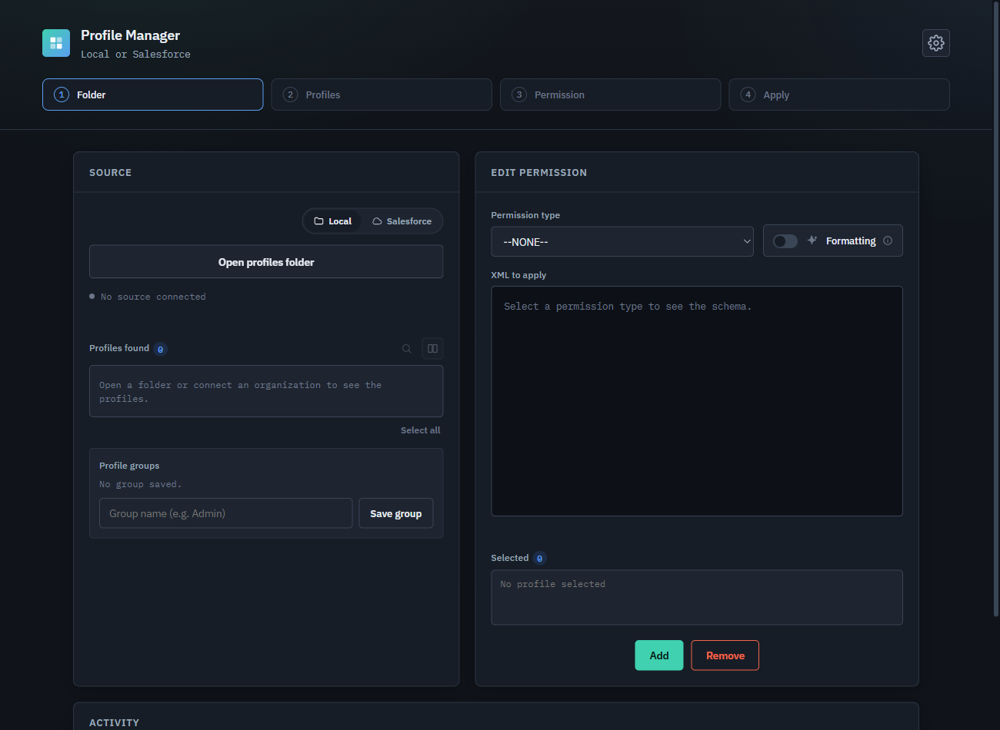

Features
See it in action


Chrome Extension
View, compare, and edit Salesforce Profile permissions — locally on .profile-meta.xml files, or connected directly to your org. No server, no account, entirely in your browser.


